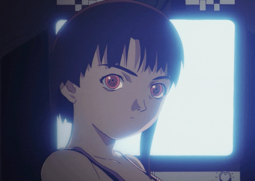
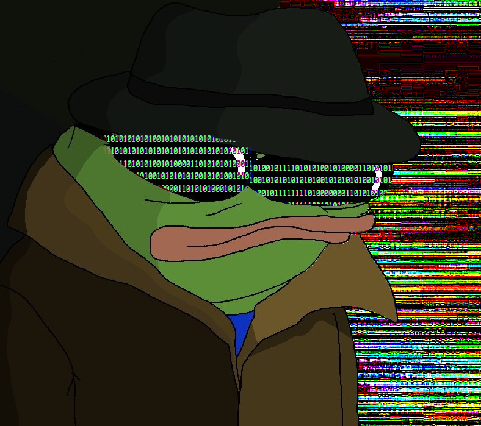

>ARE YOU THE SAME PERSON YOU WERE YESTERDAY?
I am. That's the only consistent thing that you can know about me.
But, that's not a good description.
My greatest hobby is getting into new things, I do watercolour, writing, reading, imageboards, politics, historical study, philosophical study, grand strategy gaming, and of late,linux and programming.
I love themes of horror, cyberpunk, and frankly, surreality/irreality.
I've also always had a healthy interest in psychedelics, and psychoactive chemicals in general. The idea of another world fascinates me, realms further beyond our consistent and conceived consciousness.
Sometimes I wonder what it would like to be Insane. Maybe I'll find out one day.
Privacy, and Anonymity is a big concern for me, and I'll probably add a basic OPsec guide here sometime. Fuck the three letter agents. Every goddamn fucking aspect of humanity is captured and commercialised, and it all leads to this stale, safe, and uninteresting world.
Politically I'm violently pro free expression/free information. While I definitely consider myself to be on the right, I try not to blindly tow the line, and I always question the narrative. Often it annoys me how many rightoids are hypocrites and don't have a decent philosophical base for their ideas.

END